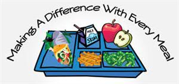

Results of annual, standardized assessments don't describe the full school experience, but they do provide the most accurate and reliable signal of student performance. Every HISD school should demonstrate progress in the core areas of math and reading, as well as cultivate students and faculty focused on improving performance through outstanding teaching and learning.
Student Progress
Compared to student performance, which signals the share of students achieving at various levels, student progress is a measure of how much students grow from year to year. While some schools may have relatively few students meeting or exceeding state standards, it is important to gauge the extent to which those schools help students catch up.
Safe And Effective
SchoolsHISD believes that all schools must provide caring and supportive environments. School environments that are safe and welcoming better enable students and staff to learn and teach.
Our Mission is to enhance the educational process and to support the essential link between nutrition and education. This is accomplished by preparing and serving nutritious, appealing meals that meet recommended dietary guidelines. The Child Nutrition Staff will serve school meals in a positive, cheerful manner, while maintaining financial soundness and enhancing the educational experience for all students.